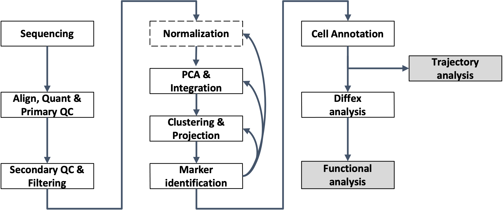

PCA and Integration
UM Bioinformatics Core
2024-02-27
Workflow Overview

Introduction
One of our ultimate goals is to cluster the cells according to their expression profiles, and determine what cell types correspond to these clusters for the purposes of differential expression between clusters and/or between conditions within clusters. However, in our dataset the 12 samples contain 1K - 3K cells each with measurements across 21K genes per cell and current single cell experiments can generate up to 10K-12K cells per sample.
This means that even after filtering the data, we are working very “high-dimensional” data. High dimensional data presents some major challenges and requires something called dimensionality reduction. Dimension reduction helps us reduce the number of separate dimensions by grouping correlated features into a single dimension. This makes downstream analysis steps more computationally feasible.
Similar to the previous sections, the process of selecting informative dimensions in a dataset is often iterative, but only a single value is likely to be reported even when multiple parameter choices may have lead to similar results/conclusions.
In this section, we will demonstrate the steps to perform dimensionality reduction on our data using principal component analysis (PCA).
Similar to the previous sections, the process of selecting informative dimensions in a dataset is often iterative only a single value is likely to be reported, even when multiple parameter choices may have lead to similar results/conclusions.
Objectives
- Understand why we use PCA for dimensionality reduction
- Choose an appropriate number of principal components to cluster our data
Dimensionality reduction
In addition to the “high-dimensionality” expected for single-cell data, we expect the data to be both “sparse” and “noisy”. Sparse in the sense that many genes will either not be expressed or not measured in many of the cells and have zero values. Noisy due to biological variability and practical limitations of both capture and sequencing depth source.
Note on zero “inflation” of single-cell data
Single-cell data is sometimes described as “zero inflated”, however work by Svensson has challenged that characterization and argued that the higher number of zeros observed in scRNA-seq compared to bulk RNA-seq is more likely due to biological variance and lower sequencing saturation than technical artifacts. Work by Choi et al. (2020) support that zeros in single-cell data are due to biology but Jiang et al. (2022) delves more into the “controversy” zero inflation, including common approaches for handling zeros and the downstream impacts.
For sparse, high-dimensional, biological data, we expect many genes to have correlated expression as they would be impacted by the same biological process and for many genes with either low (more noisy) or similar expression across the cell population.
So how do we determine what and how many genes to use before classifying cells in our samples into cell-types/subtypes based on their expression?
More detail on dimensionality reduction
The Ouyang Lab has a “gentle introduction” section of their materials that goes into greater details on dimensionality reduction including how similar strategies are used in deep learning models. Additionaly, the OSCA book has a [chapter on Dimensionality reduction(https://bioconductor.org/books/3.15/OSCA.basic/dimensionality-reduction.html) that has useful context.What is PCA?
Principal component analysis (PCA) determines axes in high-dimensional space that capture the most variation. By definition, the PCs capture the greatest factors of heterogeneity in decreasing order in the data set.
PCA example
To understand how PCA works, we can consider a smaller dataset measuring the expression of four genes measured in just two cells, we could plot the expression of those four genes, with data from one cell plotted on the x-axis and the second cell plotted on the y-axis.

If we wanted to represent the most variation across the data, we would draw a diagonal line between gene B and gene C - this would represent the first principal component. However, this line doesn’t capture all the variance in this data as the genes also vary above and below the line, so we could draw another line (at a right angle to the first) representing the second most variation int the data - which would represent the second principal component (PC).
However, as we can see in the example below, genes near the end of each line are those with the greatest influence on the direction and length of the PC.

We’ll skip the process of calculating the score for each cell per PC, but after running PCA on our data we expect each cell to have a score based on the expression of the genes contributing to each PC and each gene will have a weight or loading.
Why PCA is useful for single-cell data
In contrast to bulk RNA-seq, where the majority of the variance in a given dataset are usually explained by the first and second PC, we expect that many more PCs are contributing to the overall variance in a single-cell data set.
However, we can assume that biological processes affect multiple genes in a coordinated way. Therefore the top PCs likely represent biological structure rather than random technical or biological noise, which affects each gene independently and and we can use the top several PCs to approximate the full data set in downstream analysis (source).
This reduction in dimensionality, from 10,000 cells x 19,000 genes, for example, to several order magnitudes less of PCs (often 30-60 PCs will be considered) and allows us to select PCs that are more likely to distinguish between biological variation related to the expected cell types/subtypes and (confounding) technical variation.
More context using PCA for single-cell data
To read more on PCA, please refer to the HBC - Theory of PCA content, from which this section is adapted and the original source material for that content, specifically Josh Starmer’s StatQuest video. For additional detail, the OSCA chapter on Principal components analysis includes a more descriptive overview of PCA in the context of single-cell data.
Run PCA on our dataset
Since PCA is sensitive to scale, we will run it on the SCT normalized
assay (reference).
We will name the reduction in an informative way to keep them clear for
us in the future. In this case, our data has not yet been integrated,
but it has been SCT normalized. So we will name the reduction
unintegrated.sct.pca. Note that SCTTransform()
returned a set of highly variable genes, and the RunPCA()
function will use this subset to determine the PCs and genes associated
with those PCs.
geo_so = RunPCA(geo_so, reduction.name = 'unintegrated.sct.pca')In the console, the first 5 PCs are listed along with the associated
genes. If we look at the geo_so object, we’ll see our
dimension reduction:
geo_soAn object of class Seurat
38503 features across 22320 samples within 2 assays
Active assay: SCT (17129 features, 3000 variable features)
3 layers present: counts, data, scale.data
1 other assay present: RNA
1 dimensional reductions calculated: unintegrated.sct.pcaWe can also visualize both the cell and gene features that define each principal components using Seurat provided functions source.
First, we can print out the top 5 (gene) features per dimension by accessing that part of the Seurat object:
print(geo_so[['unintegrated.sct.pca']], dims = 1:5, nfeatures = 5)PC_ 1
Positive: Col1a1, Col3a1, Col1a2, Sparc, Dcn
Negative: Lyz2, Cd74, Apoe, H2-Aa, C1qb
PC_ 2
Positive: Col1a1, Col3a1, Col1a2, Dcn, Lyz2
Negative: Fabp4, Aqp1, Pecam1, Egfl7, Flt1
PC_ 3
Positive: Apoe, Fabp4, C1qb, Lyz2, C1qa
Negative: Eef1a1, Rps28, Myl6, Slc25a4, Rpl13
PC_ 4
Positive: Apoe, Pf4, C1qa, C1qb, Ccl8
Negative: Cd74, H2-Ab1, H2-Aa, H2-Eb1, Acta2
PC_ 5
Positive: Acta2, Rgs5, Tagln, Myl9, Apoe
Negative: Cd74, H2-Ab1, H2-Aa, H2-Eb1, Il1bWe can also highlight genes loaded for each dimension using a visualization:
VizDimLoadings(geo_so, dims = 1:2, reduction = 'unintegrated.sct.pca')
ggsave(filename = 'results/figures/qc_pca_loadings.png', width = 12, height = 6, units = 'in')We can look at how cells load on the first two principal components,
similarly to how we often look at samples for bulk RNA-seq, with the
DimPlot function:
DimPlot(geo_so, reduction = 'unintegrated.sct.pca', group.by = 'day')
ggsave(filename = 'results/figures/qc_pca_plot_unintegrated_sct_day.png', width = 7, height = 6, units = 'in')Lastly, a common visualization used in Seurat tutorials is
DimHeatmap(), which orders both cells and features
according to their PCA scores and allows us to see some general patterns
in the data:
DimHeatmap(geo_so, dims=1:3, cells=500, balanced=TRUE)Since the heatmap isn’t a ggplot, we need to use a more general output function to save it to file
png(filename = 'results/figures/qc_pca_heatmap.png', width = 12, height = 4, units = 'in', res = 300)
DimHeatmap(geo_so, dims=1:3, cells=500, balanced=TRUE, reduction = 'unintegrated.sct.pca')
dev.off()How does Seurat use PCA scores?
Per the Ho Lab’s materials - “To overcome the extensive technical noise in any single feature for scRNA-seq data, Seurat clusters cells based on their PCA scores, with each PC essentially representing a ‘metafeature’ that combines information across a correlated feature set. The top principal components therefore represent a robust compression of the dataset.”
Choosing the number of significant PCs for dimensionality reduction
Why not use every principal component generated for this dataset? Using too many PCs risks including uninteresting technical variation and a single cell itself is not a reasonable functional unit for most biology.
A good starting point for determining how many PCs to select for your single-cell analysis is to understand the “resolution” of your biological question. Is answering your biological question dependent on identifying rarer cell types or specific subtypes? Or are broader cell-types more relevant?
For this dataset, we are expecting a diversity of cell types and the cell populations that mediate wound healing, or that are part of the aberrant transition to bone, might be more rare in the population so after evaluating the relative contributions across the first set of PCs, we might want to consider selecting too many rather than too few PCs to start.
Visualizing relative contributions of each PC
One way to determine how many PCs to include is by looking at an elbow plot, which shows the percent variance explained by successive PCs.
ElbowPlot(geo_so, ndims = 50, reduction = 'unintegrated.sct.pca')
ggsave(filename = 'results/figures/qc_sct_elbow_plot.png')In this plot, we could arbitrarily choose a number along the x-axis that looks like a sharp change in the variance from one PC to the next, that is, an elbow. Of course, the choice is not always obvious, and this plot is no different. We could also try to quantify our choice.
Using a (crude) optimization to select a starting point
Function to return minimum PCs based on two possible metrics:
# Function to determine optimal PCs after RunPCA()
optimal_pcs = function(so, reduction) {
# quantitative check for number of PCs to include
pct = so@reductions[[reduction]]@stdev / sum(so@reductions[[reduction]]@stdev) * 100
cum = cumsum(pct)
co1 = which(cum > 90 & pct < 5)[1]
co2 = sort(which((pct[1:length(pct)-1] - pct[2:length(pct)]) > .1), decreasing = T)[1] + 1
pcs = min(co1, co2)
return(pcs)
}If we apply this function to our data, then we expect a number of PCs somewhere within the bend of the elbow plot to be returned:
pcs = optimal_pcs(geo_so, 'unintegrated.sct.pca')
pcs15Again, this number is likely a starting point and may need to revise depending on the outcome of the downstream steps.
While outside the scope of this workshop, there are community efforts to develop more sophisticated methods to select like the [chooseR package] or the option to use clustering trees to evaluate the stability of this parameter choice.
Integrate Layers
Having normalized the data with SCTransform() and
performed the dimension reduction with RunPCA(), we are now
ready to integrate our data.
New to Seurat v5 is the improved IntegrateLayers()
function which makes selecting different integration methods much
easier. The results of each alternative integration method are stored
within the same Seurat object, which makes comparing
downstream effects much easier. So, if we wanted to run the slightly
faster RPCAIntegration method, we would run:
geo_so = IntegrateLayers(
object = geo_so,
method = RPCAIntegration,
orig.reduction = 'unintegrated.sct.pca',
normalization.method = 'SCT',
new.reduction = 'integrated.sct.rpca')This
Seurat vignette on integrative analysis in v5 provides examples of
each integration method. Note, that the code in this vignette assumes
the
NormalizeData() > ScaleData() > FindVariableFeatures()
pipeline was used and our normalization.method = 'SCT' also
differs.
Note we have specified the unintegrated reduction
unintegrated.sct.pca, which is what
IntegrateLayers() operates on, along with the
SCT assay. Let’s take a look to see what’s different about
the Seurat object:
geo_so# An object of class Seurat
# 47037 features across 29615 samples within 2 assays
# Active assay: SCT (20548 features, 3000 variable features)
# 3 layers present: counts, data, scale.data
# 1 other assay present: RNA
# 2 dimensional reductions calculated: unintegrated.sct.pca, integrated.sct.rpcaObserve that we now have a new reduction,
integrated.sct.cca, which we will use downstream.
Before we move on, let’s save our updated Seurat object to file:
saveRDS(object = geo_so, file = 'results/rdata/geo_so_sct_integrated.rda')Alternate integration methods
After normalized the data with SCTransform() and
performed the dimension reduction with RunPCA(),
alternatively we could also use the CCA integration method
with the :
geo_so = IntegrateLayers(
object = geo_so,
method = CCAIntegration,
orig.reduction = 'unintegrated.sct.pca',
normalization.method = 'SCT',
new.reduction = 'integrated.sct.cca')Summary
In this section, we:
Next steps: Clustering and projection
These materials have been adapted and extended from materials listed above. These are open access materials distributed under the terms of the Creative Commons Attribution license (CC BY 4.0), which permits unrestricted use, distribution, and reproduction in any medium, provided the original author and source are credited.
| Previous lesson | Top of this lesson | Next lesson |
|---|